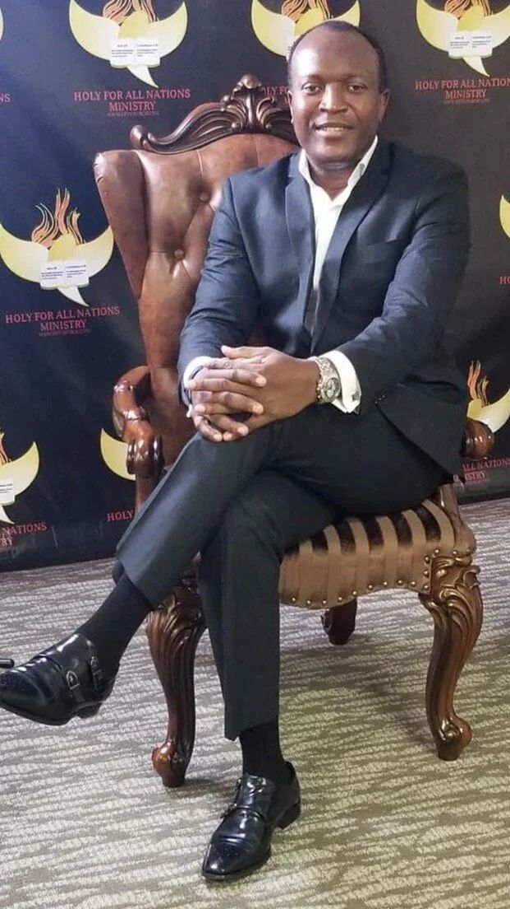

Reach the lost and backsliders
God "will have all men to be saved, and to come unto the knowledge of the truth." We go after people who have never known Jesus and those who have drifted away.
About Jesus Embassy
What began on April 30, 2017 as a small gathering in Garland, Texas is now Jesus Embassy Church in Plano: a Spirit-filled family committed to reaching, discipling, and equipping people for the work of Jesus Christ.

The vision
Our vision comes straight from Scripture: three things we do, one reason we do them, and the power we rely on.
God "will have all men to be saved, and to come unto the knowledge of the truth." We go after people who have never known Jesus and those who have drifted away.
We teach believers to observe all that Christ commanded, raising mature disciples who can lead others with conviction.
We equip born-again believers to fulfill their God-given calling and to carry the Gospel all over the world.
"He that believeth and is baptized shall be saved." Jesus promised that signs would follow those who believe: casting out devils, speaking with new tongues, and laying hands on the sick so they recover.
"He that believeth on me, the works that I do shall he do also; and greater works than these shall he do; because I go unto my Father."
Our story
One man's obedience to God's call, and a church family that grew from it.
Born in West Africa, Raymond E. Nnolim comes to the United States.
He attends Rhema Bible College in Tulsa, Oklahoma, preparing for full-time ministry.
After graduating, he serves as youth and children's pastor at Faith Community Church in Arizona.
He pioneers Nikao Bible Church in Nebraska and travels internationally to preach the Gospel.
God leads him back to Tulsa, where his ministry bears fruit in healing, miracles, and revival.
Instructed by the Lord to bring the Holy Fire Ministry to the Dallas area, Bishop Raymond starts the church in Garland, Texas.
The Lord's Holy Fire Family Church is renamed Jesus Embassy Church.
Jesus Embassy Church gathers at 3405 Custer Rd., Suite 200, in Plano, with daily prayer online and worship every Sunday.

Senior pastor
Founder & Senior Pastor
Bishop Raymond was born in West Africa and came to the United States in 2001. After training at Rhema Bible College in Tulsa, he served as youth and children's pastor at Faith Community Church in Arizona, pioneered Nikao Bible Church in Nebraska, and traveled internationally to spread the Gospel.
When God led him back to Tulsa, his ministry bore fruit in healing, miracles, and revival. In 2017 the Lord instructed him to bring the Holy Fire Ministry to the Dallas area, and he has led the church ever since.

The Nnolims
Bishop & Senior Pastor · Rev. Pastor
Bishop Raymond and Rev. Pastor Blessing Nnolim serve Jesus Embassy Church together, shepherding a family of believers with prayer, the Word, and the power of the Holy Spirit.
They are the proud parents of three children: Amaraa, Sarah, and David.
“For the kingdom of God is not in word, but in power.”1 Corinthians 4:20
Come and see
Join us at 2:30 PM in Plano for Spirit-filled worship and the preaching of the Word.